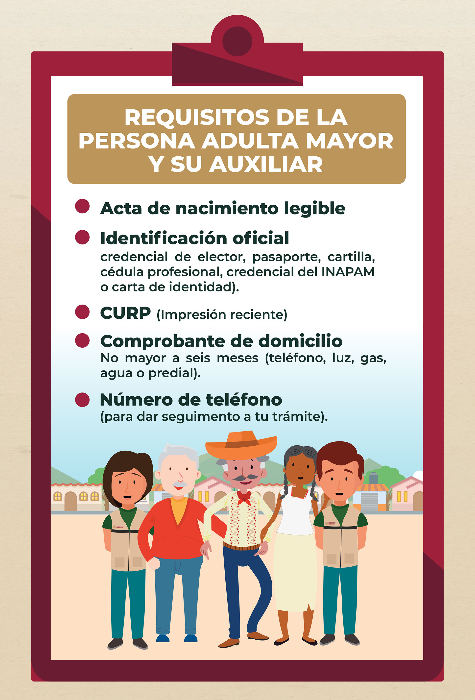

Pensión para el bienestar de las personas adultas mayores.
Apoya de manera universal a mujeres y hombres mayores de 65 años en todo el país
Objetivo.
Contribuir al bienestar de las personas adultas mayores a través de la entrega de una pensión no contributiva que ayude a mejorar las condiciones de vida y que a su vez permita el acceso a la protección social.
Persona solicitante adulta mayor.
1. Acta de nacimiento
2. Documento de identificación vigente:
- Credencial para votar
- Pasaporte vigente
- Credencial del Instituto Nacional de las Personas Adultas Mayores (INAPAM)
- U otros documentos que acrediten identidad expedidos por la autoridad correspondiente
3. Clave única de registro de población (CURP)
4. Comprobante de domicilio (máximo 6 meses de antigüedad) o constancia de residencia de la autoridad local
Personas adultas auxiliares.
1. Documentación vigente:
- Credencial para votar
- Pasaporte vigente
- Credencial del Instituto Nacional de las Personas Adultas Mayores (INAPAM)
- U otros documentos que acrediten identidad expedidos por la autoridad correspondiente
2. Clave única de registro de población (CURP)
3. Comprobante de domicilio (máximo 6 meses de antigüedad) o constancia de residencia de la autoridad local
4. Documento que acredite el parentesco con la persona adulta mayor, de acuerdo con lo establecido en el Formato Único de Bienestar
Requisitos.
Pago de marcha.
En caso de fallecimiento de la persona derechohabiente, se entregará a la persona registrada como su auxiliar, por única vez el Apoyo Económico de Pago de Marcha.
Si la persona derechohabiente no hubiera designado a un auxiliar, el Comité Técnico del Programa podrá determinar bajo circunstancias especiales, el otorgamiento de este apoyo.
Para la emisión del Apoyo Económico de Pago de Marcha, será indispensable que la persona auxiliar, no haya recibido ningún apoyo posterior a la fecha de fallecimiento de la persona derechohabiente.
El apoyo económico se emitirá al bimestre siguiente después de notificar el fallecimiento.
El Pago de Marcha podrá ser solicitado por el auxiliar, presentando los siguientes requisitos: